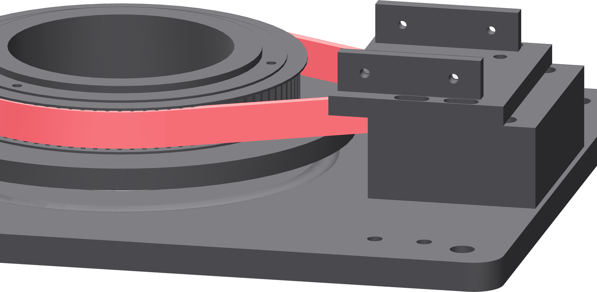

Belt tension
Slide the whole carriage outward until the long span twists about ninety degrees under finger pressure. That is the specification; there is no gauge.

- With the four M3 × 10 still loose, pull the carriage outward, away from the turntable, with steady even pressure on both arms.
- Pinch the middle of the long span between finger and thumb and twist it.
- Adjust until it twists about 90° and no further. Slack enough to twist to 180° is too loose; stiff enough to refuse 45° is too tight.
- Holding that position, tighten the four M3 × 10 — diagonal pairs, at 0.5 N·m.
- Re-check the twist. Tightening the screws can pull the carriage back.
Gate — tracking
Turn the turntable by hand through two full revolutions. The belt stays between both flanges of the 20-tooth pulley and inside the printed tooth zone of the 90. A belt that walks toward one flange is a carriage that is not square on its rails — loosen all four, re-seat the arms flat, and tension again.